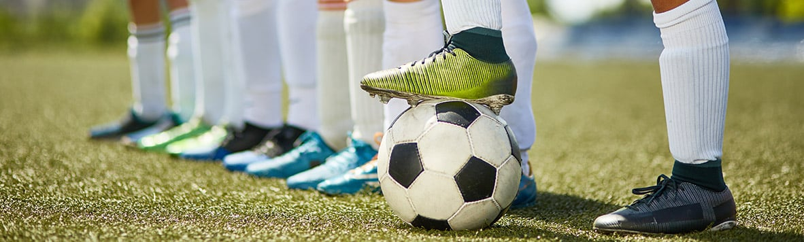
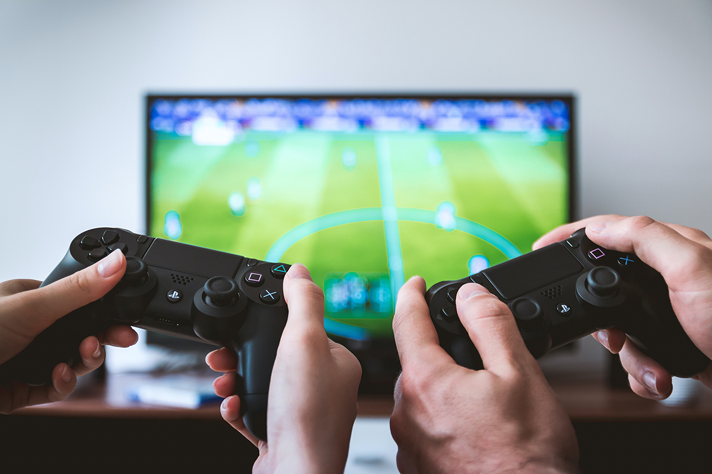

El deporte siempre ha sido una gran parte de mi vida. Me gusta realizar cualquier tipo de deporte, pero el que mas he disfrutado ha sido jugando al futbol. Ahora mismo ya no juego al futbol pero voy 3 o 4 veces a la semana a jugar al padel con mis amigos y salgo algunas tarde a correr para no perder la forma fisica.
Tambien suelo jugar a videojuegos con mis amigos cuando estoy aburrido en mi casa, pero ya no lo hago con tanta frecuencia porque me aburro facilmente con la edad que tengo y prefiero quedar con mis amigos antes que estar encerrado en mi casa. Si juego suele ser entre semana ya que sino tengo nada que hacer del instituto y no quedo con mis amigos, ya que suelo quedar los fin de semanas.
Otras de mis grandes aficiones es escuchar musica, ya que me encanta y permite relajarme escuchandola. Lo hago siempre que no tenga nada que hacer algo que requiera mucha atencion, pero sobre todo lo realizo mientras me ducho y voy conduciendo.
No soy mucho de ir al cine, yo diria que voy cuatro o cinco veces al año. La razon por la que he puesto este apartado es porque me encanta ver series en Netflix antes de acostarme o por la tarde despues de comer. Tambien es una aficion que me relaja y estoy entretenido cuando no tengo nada que hacer.